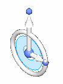
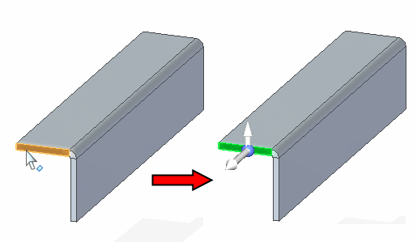
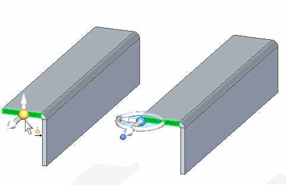

2D steering wheel
A graphical tool or handle that you can use to manipulate model geometry. The 2D steering wheel is displayed when you select cylindrical faces, patterns, manufactured features such as holes and dimples, and planar thickness faces in a sheet metal model.

The display and orientation of the 2D steering wheel will vary, based on what you have selected. For example, if you select a planar thickness face on a sheet metal model, the origin knob, primary axis, and flange start handle are displayed, and the secondary axis and tool plane are hidden.

To display the full 2D steering wheel, click the origin knob. This displays the secondary axis and tool plane, and also hides the flange start handle.
